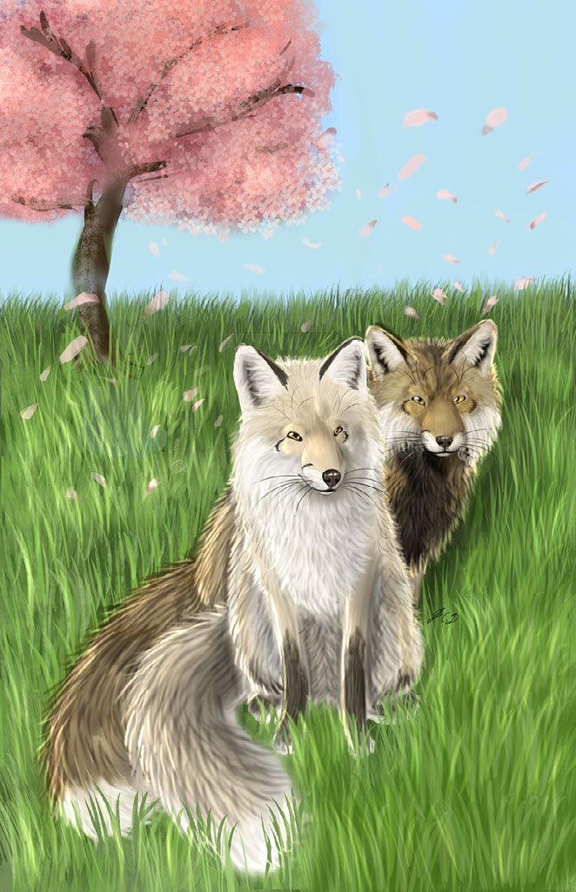

The pale full moon in the sky bleached the forest beneath it with a silvery edge, countering the shadowy darkness that had engulfed the forest that midnight. Clouds lightly brushed across the sky like enchanted purple swirls of mystery and magic, some hiding bashful constellations that wished to remain hidden, others peering out in the open to twinkle at the life that filled the forest beneath them. The unusual constellation of early Scorpius glowed down on the earth below. Clouds sent gentle fall breezes like a gentle whisper towards the earth below, multicolored leaves in the great oaks below doing their annual fall ritualistic dance as if full of sentience and ceremonial thrill. Scattered throughout the gift of Mother Nature were dozens of bushes of berries surrounding the towering, crooked oaks. From it emerged a graceful red fox. This vixen had bright red fur, the brush of her tail looked as if it was dipped in white ink, her paws and ears a deep brown like tree bark in the night, and her brilliant moonlit eyes a beautiful golden brown with a tinge of orange like a soothing sunset.
In her jaws hung a fox kit who looked a bit lighter and more golden than her—a fire-and-ice fox morph with cream and white fur and deep dark brown paws and ears. She was a kit that wasn’t born in the usual kitting season of Pisces or Aries. The mother fox ran as fast as her legs would take her, staying hidden in the shadows and bushes. Occasionally, her kit yelped in protest, feeling tired, but the mother fox could not stop. Perhaps her mother’s rapidly beating heart put her in a mutual unease. Maybe the rapid motions of digging into the earth unsettled her.
She descended a slope and went towards a safe and well-hidden burrow. She burrowed into the freshly dug fox tunnel in the ground, carrying her only daughter still with her and wrapping her long tail around her kit, blanketing her in soothing warmth. The kit squeaked, kneading her soft paws against her mother. She was a small fox kit and relatively weak. The unusual Scorpius-born kit yipped up at her mother, and the mother fox knew it wouldn’t be long before the bitter cold took over the land and made prey scarce. It would be hard to care for a kit in such conditions. That’s why a fox’s reproductive system adapted in favor of kits born in the Pisces and Aries season, for they would be grown before the bitter frost sank its fangs into the earth.
Grow strong, my dear one,
her mother murmured, comfortingly licking her fuzzy head. The fox mother was exhausted, though she kept her eyes open as she watched her daughter
close her eyes in the comfort of a safe, secluded fox den, drifting off into sleep as the sky was aglow with the start of the rising sun. The kit was small, frail, and breathing heavily,
her tiny body shivering with every heavy pant. The mother fox wrapped her tail around her daughter more closely, the kit’s shivering slowing just a tad. Concern filled her gaze as she
lightly nuzzled her kit in comfort, hoping she had given her enough body heat to remain warm. How could a kit that was sickly and still nursing make such a journey? I will do all
I can to help you, my dear kit, she thought, looking down at her, I promise that on my own life, my precious Jewel. That’s the perfect name for you, dear.
A cramped study was at the end of the long, taupe-carpeted hallway. Scattered papers were thrown about the desk of the study, and inside the room was a young man muttering under his breath as papers fell about, crinkling in disarray. The young man in the study had lightly tan skin and wavy, dark, short hair resembling chocolate swirls. His face had a short, well-groomed beard, and his eyebrows were thick. He gave an expression of seriousness, though his slightly slanted brown eyes expressed kindness.
This man was named Mitch. He often spent his time in his study room, filling out various papers for his job and sorting through the photographs he had taken. He had to move out of state for his career—all the way from Washington, D.C. to New York—to take photographs of the big city and some of the surrounding areas. He missed his family quite a bit, though they saw each other, at least for Hanukkah.
He glanced at a text message from his sister that was glaring open on his smartphone, the screen dimming from inactivity. It read, Hey bro, why don't you get a pet? They have helped my
loneliness since I moved out, too. We got this Labrador Retriever, and she's the sweetest thing.
Maybe that wasn’t such a bad idea. Mitch got up, putting on a thin gray jacket from a coat rack at the end of the hall and his black sneakers. He sent a text before he went out the door,
Ok, sis, love you.
He stepped out the door and went into his Toyota, driving out into the city that never sleeps.
After getting out of a long road of traffic, he saw a promising animal shelter, parked his car, stepped out of it, and began heading into the building.
The white tile floors beneath him were once waxed, though the shine turned dull from people walking in and out of the shelter. Cages with various animals were all around. There were the
hefty barks of dogs as they heard Mitch walk inside, some with excitedly wagging tails, almost as if they were saying, Pick me! Pick me!
To his right, he saw various excitable dogs;
to his left, he saw bags upon bags of dog food, cat food, litter, and then, in a row beyond that, various canned foods.
Excuse me,
Mitch adjusted the collar of his white T-shirt. Do you know where the cats are?
The cats?
An employee looked up from her desk, lightly combing her auburn hair. Sure. They're in the back, past all the dogs. I can show you if you need me to.
Oh, thank you,
Mitch murmured. The woman was quite a bit shorter than him. He followed her past all the excitable dogs to the cats. Glowing iridescent eyes seemed to peer up at him
from all angles behind their cages.
He looked at all the different cats. He saw some black cats, all of whom his heart went out to, as he knew they were far from bad luck. Gold and green eyes peered up at him, the cats giving him lazy yawns, revealing tiny ivory-colored teeth.
No cat compared to what he saw to the left of him. This kitten had a quiet mew, and though he planned to adopt an older cat, he noticed her sunny eyes gazing into his, slow blinking with a purr. She was fuzzy and tan, having large, upright ears and butterscotch-colored fur with darker tick marks along her back and the dark ‘M’ tabby mark on her forehead, though she had no stripes along her body. Her tail was almost like a fox's, somewhat bushy, though it still had kitten fuzz, with darker hairs on the back of it. Her hind legs were slightly longer than her forelegs…
Hind leg, not legs, Mitch realized. Her right hind leg was entirely missing past the midway bend of it. She still padded over to him on her three paws, pressing her forepaw against the glass, revealing her soft pink paw pads.
What happened to her leg?
Mitch asked with horror.
We found her with a lame leg, bred from another place that breeds purebred Somali cats,
the employee explained. She was born that way, and they brought her here to be cared for
since we have a no-kill policy. Her leg was impairing her ability to walk, as she was completely paralyzed in that leg, so it kind of dragged, and the vet decided it was better for her
mobility and health if it was amputated. After she healed, she was moving around much better.
Poor thing,
Mitch murmured sadly, looking into the glass at the tiny kitten.
Do you want her?
The employee asked. She is perfectly healthy and up to date on her shots. In a month or so, you just have to take her to get spayed.
Yeah, I'll take her,
Mitch glanced at the employee. I’ll name her Butterscotch,
he smiled as he looked down at the kitten that was placed in his arms. Aw. We'll be best friends
forever, all right?
She mewed in response, purring.